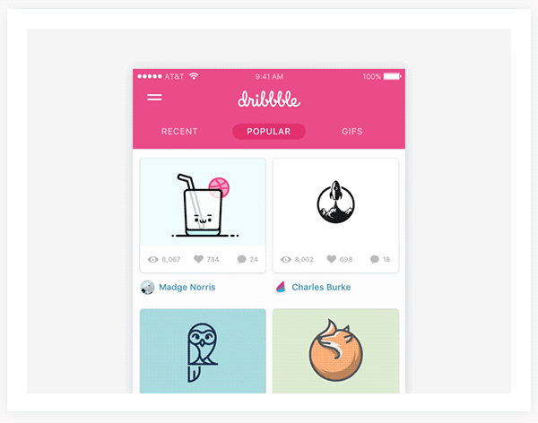

smashing conf 2017 🇪🇸
🥓 ☀️ ⛵️ 🍷

Brad Frost
How do we work with each other
Basically, make a design system and it will promote:
- UI consistency and cohesion
- Faster time to production
- Shared vocabulary
- Easier testing
- Useful referencing
- Future-friendly foundation
YOS + Hive
🌈
Brads top tips
- (Dev) To avoid task ambiguity - make everyone do a codepen in planning.
- (Design) Use Sketch libraries let you share symbols accross documents
- Use design tokens...
Sarah Drasner / Stephanie Walter / Chris Lilley
Cheating UX
Why are mirrors in lifts?
- Claustrophobia
- Boredom
Why do we animate?
The attention span of a user is only 2 seconds...
Amazon
"For every one second delay, conversions dropped by 7%. If you sell $100k per day, that’s an annual loss of $2.5m."
Wallmart
"Gains 1% revenue increase for every 100ms of improvement. 💵"
Ericsson
"Anything loading over 4 seconds: HORROR 😱"
Perceived Perf Wins 🚀
(because humans over-estimate passive waits by 36%)
Novel waiting experiences make people wait longer
don't use a standard loading spinner

Use a branded loading animation

Lots of short animations are perceived as long
... but one long animation becomes shorter.

Younger audiences are more demanding
🙇and will not wait as long as
👴🏻Calm users wait longer
Trust your APIs
Provide optimimistic, instant feeback to the user where appropriate.
Ideal Interface Response Guide
| Duration ⏱ | Action 🏃 |
|---|---|
| 0 - 300ms | Provide Instant UI feedback |
| 300ms - 1 second | Delay is tolerable |
| 2 - 5 seconds | Display loading animation |
Anton & Irene
Real work / life balance in the studio
top tips
- it's OK to steal from other disciplines - never you're own
- don't forget you can upskill on youtube
- don't be afraid to ask - you already have a no, but you might get a yes.